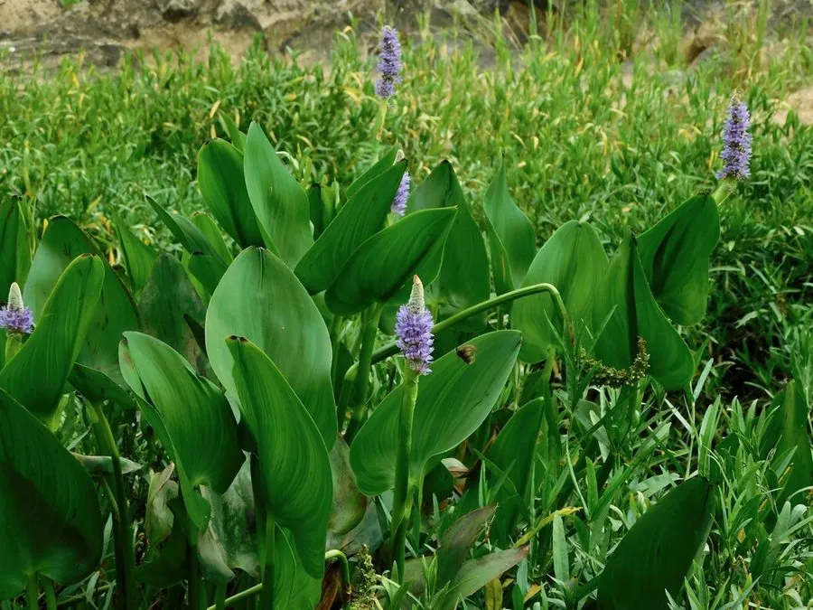

水生植物 · 植物界
梭鱼草 Pontederia cordata

雨久花科梭鱼草属多年生挺水草本，叶片心形、花序蓝色穗状，原产北美，是湿地和园林水景常见的观赏植物。
- 分类
- 门被子植物门纲木兰纲目鸭跖草目科雨久花科属梭鱼草属
- 栖息环境
- 北美东部的沼泽、湿地与河岸浅水区
- 地理分布
- 原产北美洲东部，中国南北各地水景中引种栽培
- 保护级别
- 暂无评估
物种志
梭鱼草为雨久花科梭鱼草属的多年生挺水草本，株高 0.6–1.2 米，根状茎粗壮。叶片基生或茎生，心形或箭形，长 15–30 厘米，叶柄长，基部鞘状。花序为穗状，长约 10–15 厘米，花蓝色或紫色，花期夏季至秋季；果实为蒴果。
梭鱼草原产北美洲东部的沼泽、湿地和河岸，喜阳光充足、温暖湿润和浅水环境，适宜水深 10–30 厘米，耐寒性较强。它叶片心形、花序蓝色穗状，花期长，是湿地公园和庭院水景中常见的观赏植物，也可用于水质净化。栽培以分株繁殖为主，春季将根状茎切段栽入塘泥即可；生长期间保持浅水，及时清除枯叶。
形态与习性
- 株高0.6–1.2 米
- 叶片心形或箭形，长 15–30 厘米
- 花期夏季至秋季，花蓝色穗状
- 水深适宜水深 10–30 厘米
- 光照喜充足阳光
- 土壤富含腐殖质的湿地土
- 繁殖根状茎分株
- 主要用途水景观赏、湿地净化
趣味知识
- 梭鱼草的花序呈蓝色穗状，花期可从夏季持续到秋季。
- 它原产北美沼泽，耐寒性较强，中国南北都能栽培。
- 梭鱼草的根状茎能吸收水中养分，常用于湿地净化。